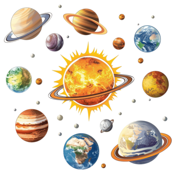

1. Explorando o Sistema Solar
Objetivo: Ensinar as crianças sobre os planetas e o espaço de forma interativa.
Dicas:
Animações interativas: Usa gráficos coloridos e animações para cada planeta. As crianças podem clicar em cada planeta para aprender fatos como tamanho, distância do Sol, e características únicas.
Navegação espacial: Oferece uma nave espacial virtual que as crianças podem "pilotar" de um planeta a outro, explorando o Sistema Solar e descobrindo novas informações ao longo do caminho.
Mini-jogos educativos: Cria pequenos desafios, como arrastar e soltar os planetas na ordem correta ou associar características (por exemplo, "Este planeta tem anéis" = Saturno).
Exploração de luas e cometas: Expande o jogo para incluir luas importantes, asteroides, e cometas, ampliando o conhecimento das crianças sobre o sistema solar.
Áudio imersivo: Cada planeta pode ser acompanhado por uma narração que dá vida aos factos, ou sons do espaço para aumentar a imersão.
Progressão e recompensas: As crianças podem desbloquear "medalhas de astronauta" ou conquistas por aprenderem sobre todos os planetas ou responderem corretamente a perguntas ao final de cada nível.
Brincadeiras Educativas sobre o Sistema Solar
- Jogo da Memória Planetário: Crie cartões com imagens dos planetas e suas características. As crianças devem formar pares, associando a imagem de um planeta com a sua descrição.
- Caça ao Tesouro Espacial: Esconda objetos que representem planetas e outros corpos celestes pela casa ou jardim. As crianças devem seguir pistas relacionadas às características dos planetas para encontrar cada item.
- Teatro de Fantoche Espacial: Use fantoches ou crie personagens com materiais recicláveis que representem planetas, o Sol e até astronautas. As crianças podem inventar histórias e dramatizar suas aventuras pelo espaço.
- Modelagem do Sistema Solar: Usando massinha de modelar, incentive as crianças a criar planetas e montar o Sistema Solar. Durante a atividade, explique as diferenças entre os planetas em termos de tamanho e distância do Sol.
- Roda de Música sobre Planetas: Faça uma roda com as crianças e cante músicas relacionadas aos planetas. Cada vez que mencionarem um planeta, as crianças podem girar ou pular, simulando o movimento de órbita ao redor do Sol.
Essas atividades divertidas e educativas podem ajudar as crianças a aprender sobre o Sistema Solar de forma lúdica, tornando o processo mais envolvente e memorável.
Documento
Segue abaixo alguns documentos para utilizar:
-
Planetas
